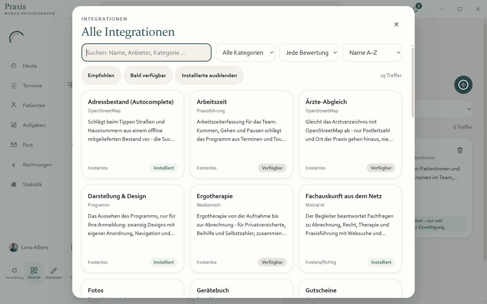
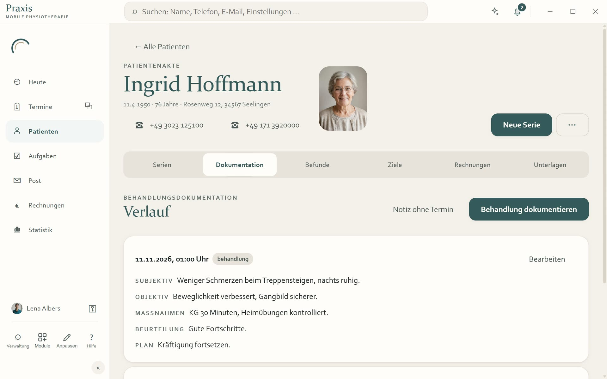
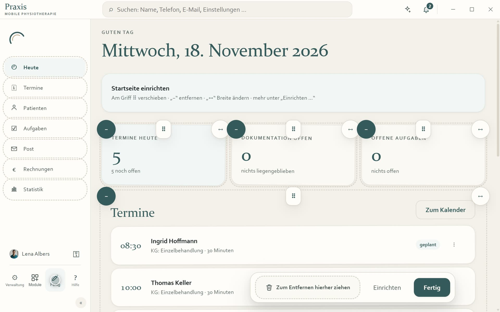
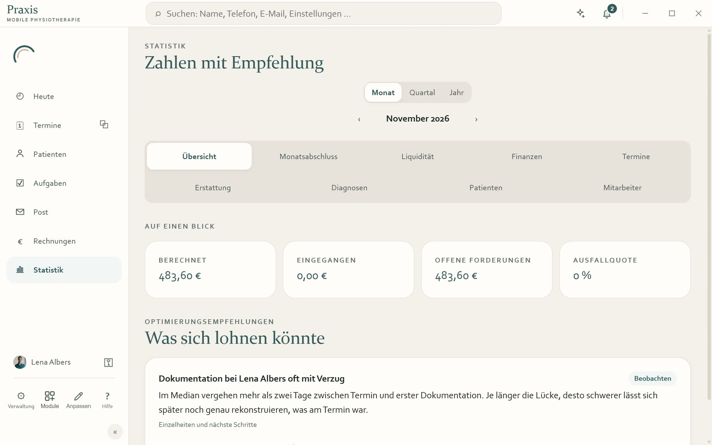

Praxissoftware für Physiotherapie
Ihre Praxis. In den Räumen und unterwegs.
Termine, Akte, Befund, Dokumentation, Rechnungen und Kassenabrechnung in einem Programm. Es ist nach dem Installieren startklar und wächst über Module mit. Ihre Akten bleiben dabei in Ihrer Praxis, nicht in einer Cloud.
- Sofort startklarwenig einstellen, gleich loslegen
- Mit Modulennur, was Ihre Praxis braucht
- Offlineverschlüsselt, ohne Cloud
- Befund und Dokumentation
- Unterschrift direkt am Surface
- Kalender auf dem zweiten Bildschirm
- Posteingang mit eigenem Postfach
- Kassenabrechnung nach § 302 SGB V
- Örtliche KI ohne Cloud
- Windows · macOS · Linux
Die Idee
Einfach anfangen. Wachsen, wenn Sie wollen.
Nach dem Installieren fragt das Programm nur ab, was auf Ihren Rechnungen und Verträgen stehen muss, danach können Sie arbeiten. Weitere Funktionen schalten Sie als Modul dazu. Was ausgeschaltet ist, taucht nirgends auf: kein Menüpunkt, kein leeres Feld, keine Meldung.
Von Anfang an dabei
- Termine und Kalender fürs Team
- Patientinnen und Akte
- Befund und Dokumentation
- Verträge mit Unterschrift am Gerät
- Rechnungen, Zahlungen, Mahnungen
- Posteingang mit eigenem Postfach
- Statistik und Monatsabschluss
- Begleiter mit örtlicher KI
Zum Ausprobieren antippen – im Programm geht das genauso.
4 von 16 Modulen eingeschaltet

Ein Tag mit Mobile Praxis
Vom ersten Termin bis zum Feierabend, ohne Zettel.
-
07:45
Heute: alles Wichtige auf einer Seite.
Die Termine des Tages, offene Aufgaben, Rückrufe und unbezahlte Rechnungen. Welche Kacheln auf Ihrer Startseite stehen, legen Sie selbst fest.
-
08:30
Der Befund ist strukturiert und schnell erhoben.
Befundbögen mit Tests, Skalen und ICF, dazu Verlaufsbefunde, die an den Erstbefund anknüpfen. Bilder und Videos liegen verschlüsselt in der Akte.
-
10:15
Die Dokumentation schreiben Sie direkt nach der Behandlung.
Strukturiert nach Befinden, Befund, Maßnahmen und Plan, mit Schmerzskala vorher und nachher. Wer mag, diktiert, und die örtliche KI macht daraus einen Entwurf. Was gespeichert wird, bestimmen Sie.
-
13:00
Die Post landet gleich bei der richtigen Patientin.
Sie verbinden Ihr Praxis-Postfach einmal, danach kommen E-Mails direkt ins Programm und werden der passenden Akte zugeordnet. Antworten, Unterlagen und Rezepte haben Sie dort, wo Sie behandeln.
-
17:30
Am Abend sehen Sie, wo die Praxis steht.
Umsatz, Auslastung, offene Forderungen und Ausfälle je Monat und je Person. Am Monatsende liegt das Paket für die Steuerberatung bereit.
Befund & Dokumentation
Die Akte, die mitdenkt und nichts verliert.
Jede Änderung wird als neue Fassung gespeichert, überschrieben wird nichts. So verlangt es § 630f BGB, und Sie müssen nicht daran denken.

Unterschrift
Unterschreiben, direkt auf dem Surface.
Behandlungsvertrag, Datenschutz, Einwilligung: Die Patientin unterschreibt mit dem Stift direkt im PDF. Kästchen tippt sie an. Die Unterschrift wird an genau die richtige Stelle gesetzt und das Dokument versiegelt. Sie brauchen keinen Drucker und keinen Scanner und müssen nichts abheften.
- Der Wortlaut bleibt unverändert, hinzu kommt nur die Unterschrift
- Unterschriebenes ist versiegelt und lässt sich nicht mehr ändern
- Haken bei der E-Mail-Einwilligung? Er landet gleich in den Stammdaten
Kalender
Der Kalender bekommt seinen eigenen Bildschirm.
Ein Klick, und der Kalender öffnet sich als eigenes Fenster. Sie ziehen ihn auf den zweiten Monitor und arbeiten im Hauptfenster weiter: Akte, Rechnung, Post, während die Woche immer sichtbar bleibt.
Jede Person in ihrer Spalte
Tag, Woche, Monat, Liste. Sie blenden ein, wen und welchen Ort Sie sehen wollen, und färben nach Person, Leistung oder Status.
Räume und Geräte
Mit Kapazität. Ist etwas doppelt belegt, warnt das Programm und schlägt einen anderen Raum oder eine andere Zeit vor.
Freie Zeit auf Knopfdruck
Passende Lücken nach den Terminwünschen der Patientin, Serien in einem Zug und Feiertage schon eingetragen.
Ihr Programm
Jede Person richtet es sich ein, wie sie arbeitet.
Tippen Sie auf den Stift. Navigation und Startseite lassen sich dann verschieben, ausblenden und in der Breite ändern. Das gilt für jede Person einzeln, die Dokumente sehen danach unverändert aus.


Drei Layouts, zehn Designs
Große Flächen für Stift und Finger, Hoch- und Querformat.

Modul Hausbesuche
Und wer hinausfährt, hat die Praxis dabei.
Mit dem Modul Hausbesuche wird aus dem Tag eine Route. Sie sehen, wann Sie losfahren müssen, und das Fahrtenbuch füllt sich von selbst. Die Akte nehmen Sie auf dem Tablet mit, auch ohne Netz.

- Tour mit FahrzeitenReihenfolge, Abfahrtszeit, Navi per QR-Code aufs Handy
- Fahrtenbuchmit Postleitzahl und Ort statt Namen, Sie bestätigen nur noch
- „Ich komme später“schicken Sie mit einem Tipp als SMS an die nächste Patientin
- Offlinearbeiten Sie ohne Netz weiter, abgeglichen wird bei der nächsten Verbindung
Sicherheit
Ihre Akten verlassen die Praxis nicht.
Keine Cloud, keine Telemetrie und kein fremder Server, der mitliest. Jede Stelle, an der das Programm ins Netz geht, ist einzeln benannt und durch Prüfungen abgesichert.
Verschlüsselt gespeichert
Die ganze Datenbank ist verschlüsselt, ebenso die Sicherungen. Fotos und Videos aus dem Befund sind einzeln verschlüsselt.
KI auf dem Gerät
Diktat, Suche und der Begleiter laufen auf Ihrem Rechner, ohne Netzverbindung. Fragt der Begleiter doch einmal im Netz nach, dann nur ohne jeden Personenbezug.
Nichts verschwindet heimlich
Dokumentation, Befunde und das Protokoll sind unveränderlich. Wer was wann geändert hat, bleibt nachvollziehbar.
Klare Rollen
Inhaberin, Therapeutin, Büro. Das Büro rechnet ab, sieht aber keine Dokumentation. Die Schweigepflicht ist im Programm umgesetzt und hängt nicht an einer Dienstanweisung.
Ausprobieren
Erst sehen. Dann testen. Dann entscheiden.
Demo
kostenlos
Das ganze Programm mit einer erfundenen Musterpraxis. Jedes Dokument trägt den Stempel „Demo“. Die Demo ist zum Ansehen gedacht, nicht zum Arbeiten.
Demo ladenVollversion testen
30 Tage frei
Mit Ihren echten Patientinnen, allen Funktionen und ohne Wasserzeichen. Sie geben keine Zahlungsdaten an und müssen nichts kündigen.
Testzugang anfordernLizenz
monatlich oder jährlich
Mit allen Updates, neuen Kassenpreisen und Katalogen. Läuft die Lizenz aus, bleibt alles lesbar und exportierbar. Ausgesperrt wird niemand.
Angebot anfordernDemo
In fünf Minuten auf Ihrem Rechner.
Installieren, öffnen, mit einem Tipp anmelden. Die Musterpraxis ist schon eingerichtet, mit Patientinnen, Terminen, Rechnungen und einem ganzen Team. Mit „Neue Musterpraxis“ fangen Sie jederzeit von vorn an.
- Windows 10 oder 11, 64 Bit, rund 4 GB frei
- Nur erfundene Daten: Bitte tragen Sie keine echten Patientinnen ein
- Windows fragt beim ersten Start nach. Klicken Sie auf „Weitere Informationen“ und dann auf „Trotzdem ausführen“.
Fragen
Was Praxen vorher wissen wollen.
Ist das nur etwas für mobile Praxen?
Nein. Das Programm ist für Praxen mit eigenen Räumen genauso gebaut wie für Hausbesuche. Hausbesuche sind ein Modul: Ist es ausgeschaltet, gibt es keine Tour und kein Fahrtenbuch, und ein Termin findet einfach in der Praxis statt.
Wie viel muss ich einrichten?
Wenig. Die Ersteinrichtung fragt ab, was auf Rechnungen und Verträgen stehen muss: Name, Anschrift, Bank und Steuernummer. Danach können Sie arbeiten. Alles Weitere schalten Sie dazu, wenn Sie es brauchen.
Brauche ich Internet?
Nein. Das Programm arbeitet vollständig auf Ihrem Gerät. Internet brauchen nur Dinge, die ohne Netz nicht gehen: SMS-Erinnerungen, E-Mail, Updates und Kataloge.
Kann ich mein E-Mail-Postfach anbinden?
Ja. Sie verbinden Ihr Praxis-Postfach einmal, danach kommt die Post in den Posteingang des Programms und wird der passenden Patientin zugeordnet. Abgerufen wird verschlüsselt und in der Voreinstellung nur lesend, auf dem Server wird nichts gelöscht.
Wo liegen meine Daten?
Auf Ihrem Rechner, verschlüsselt. Arbeiten mehrere Geräte zusammen, ist ein Rechner Ihrer Praxis der Server und nicht das Rechenzentrum eines Dritten.
Kann ich mit gesetzlichen Kassen abrechnen?
Ja. Das Programm führt die Behandlungsnachweise, rechnet Vertragspreis und Zuzahlung und legt das Abrechnungspaket für Ihr Abrechnungszentrum ab. Zulassung und Institutionskennzeichen brauchen Sie dafür wie bisher.
Und die Telematikinfrastruktur?
Die Anbindung ist in Vorbereitung. Gesundheitskarte, KIM und elektronische Patientenakte sind gebaut und werden vor der Freigabe gegen echte Anlagen geprüft. Pflicht ist der Anschluss ab dem 1. Oktober 2027.
Läuft es auf Mac oder Linux?
Die Vollversion gibt es für Windows, macOS und Linux. Die Demo steht vorerst nur für Windows bereit.
Was passiert, wenn ich nicht verlängere?
Es geht nichts verloren. Sie können weiter lesen, sichern, exportieren und Auskunft geben, nur Neues anlegen geht erst wieder mit einer Lizenz. Akten unterliegen Aufbewahrungsfristen, deshalb sperren wir niemanden aus.
Ist die KI ein Medizinprodukt?
Nein, und das ist Absicht. Sie formuliert um, findet wieder und fasst zusammen. Sie stellt keine Diagnose und bewertet nichts. Was in die Akte kommt, bestätigen Sie.